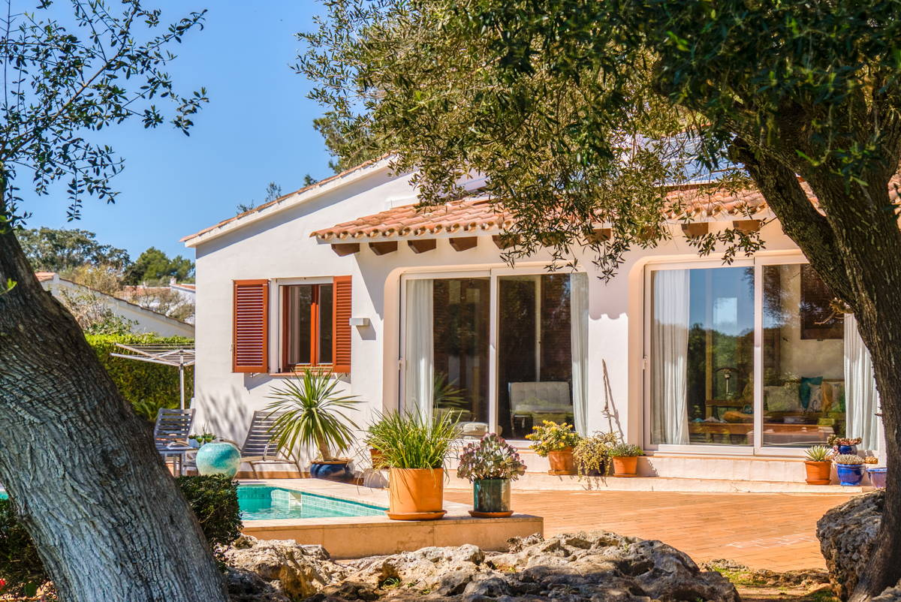

€925.000
Binixica (Binixíquer), Mahón, Menorca
Open the listingMediterranean character with modern comfort: split-level fireplace living, covered porch, olive-dotted garden and a built private pool on a generous 1,363 m² plot — renovated 2016 with A+ / solar. Cozy campo feel near Mahón without sleek-only new-build vibes.
Opened 8 Sep 2026. Asking 925.000 €. E&V card: 4 bed / 2 bath / 201 m² / 1,363 m². Copy: one en-suite; rooms adaptable (office/dressing); enclosed porch; gym/storage room; open countryside views. Pool confirmed on hero photo (description emphasises garden/porch). Not a fixer.